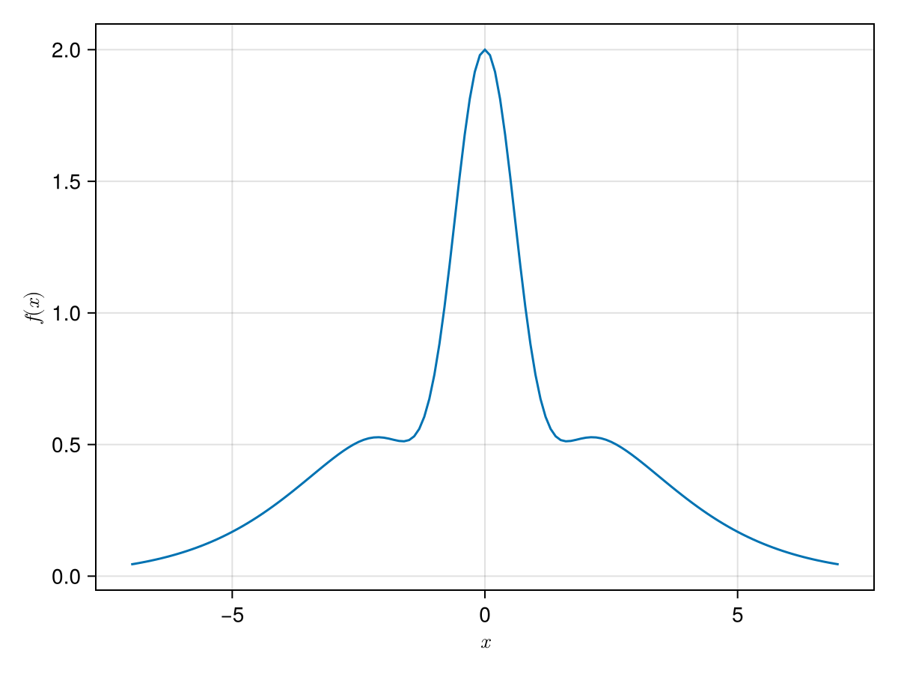
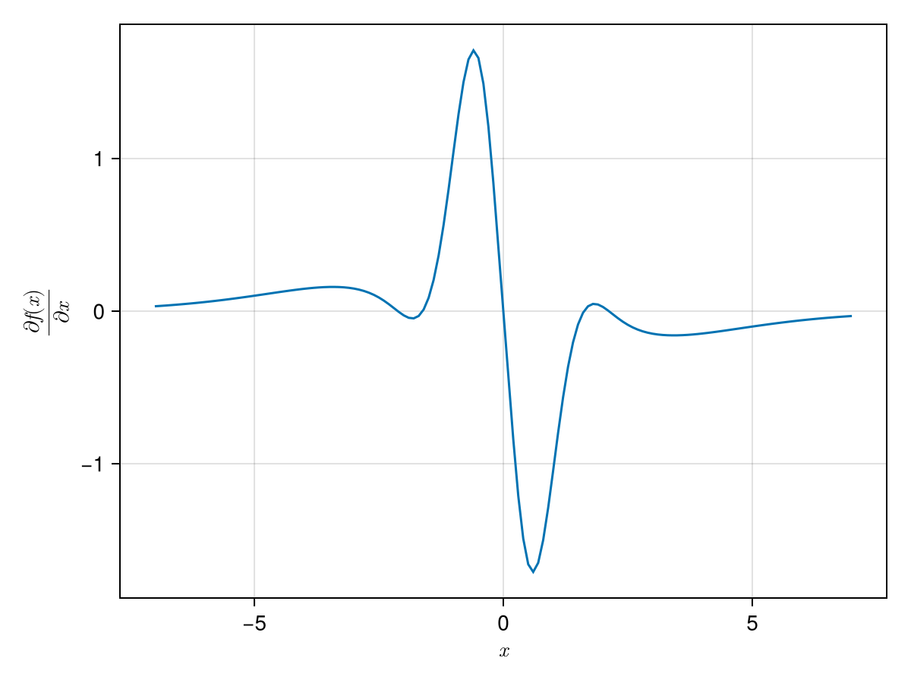

What is In-Place and what is Out-Of-Place
In SimpleSolvers we almost always use in-place functions internally for performance, but let the user deal with out-of-place functions for ease of use.
Example
using SimpleSolvers
f(x) = sum(x.^2 .* exp.(-abs.(x)) + 2 * cos.(x) .* exp.(-x.^2))
If we now allocate a OptimizerProblem based on this, we can use value[1] with it:
x = [0.]
obj = OptimizerProblem(f, x)
y = [0.]
val = value(obj, x)
val == f(x)trueTo compute the derivative we can use the functor of GradientAutodiff:
x = [[x] for x in -7.:.1:7.]
y = Vector{Float64}[]
for x_sing in x
grad = GradientAutodiff{Float64}(obj.F, length(x_sing))
push!(y, grad(x_sing))
endNote that here we used GradientAutodiff to compute the gradient. We can also use GradientFunction and GradientFiniteDifferences.

The idea is however that the user almost never used the in-place versions of these routines directly, but instead functions like solve! and value, gradient etc. as a possible diagnostic.
- 1See the section on optimizer problems for an explanation of how to use
value.